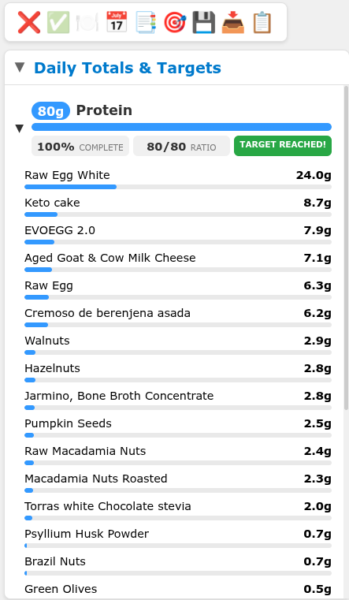
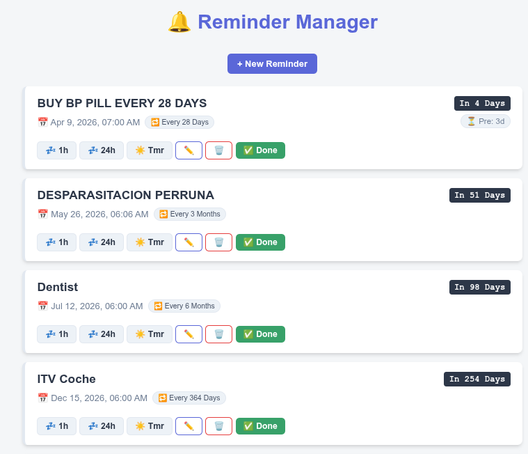
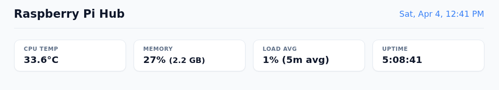
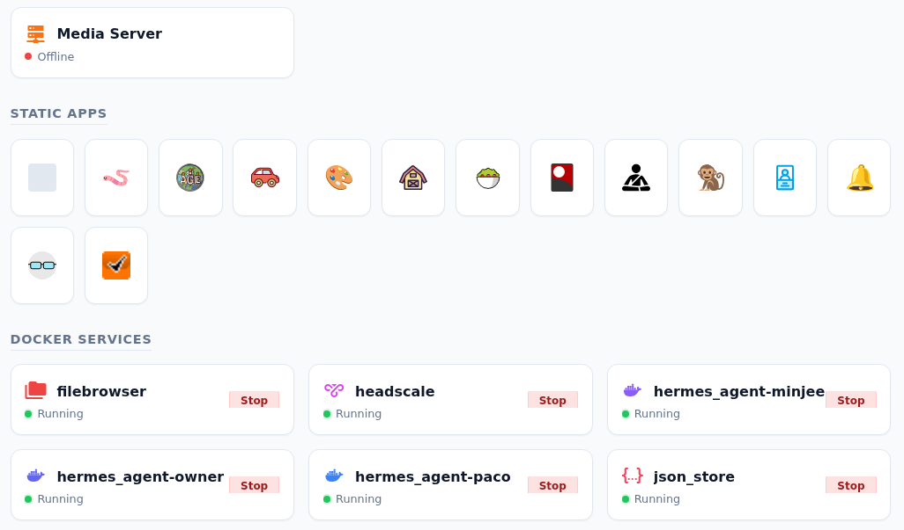
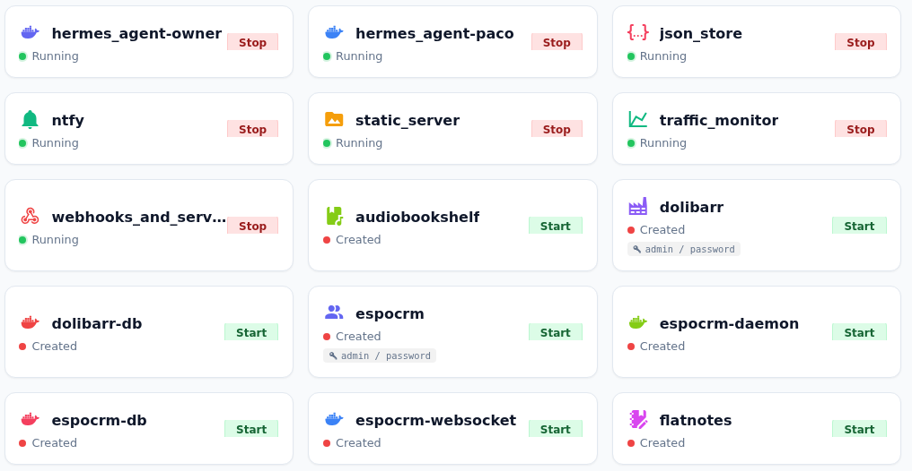

Fidel Perez Rubio
Senior Data Engineer · AI-First Engineering · Workflow Automation · 11+ Years
Same principles at every scale — infrastructure as code, containerize everything, automate away toil, monitor proactively, and design for reliability so a small team can manage a large surface area.
Home lab infrastructure
Two-node setup (Raspberry Pi + Ubuntu server) running 30+ containerized services. Self-healing, zero-touch operation with automatic DNS, backups, rebuilds, and wake-on-demand.
Deep dive — Full architecture details
Infrastructure & networking
- Raspberry Pi as always-on gateway + Ubuntu server on-demand via Wake-on-LAN
- Headscale (self-hosted Tailscale control plane) for secure mesh VPN across all devices
- Caddy reverse proxy with automatic HTTPS, dynamic config generation, and a "lazy service" pattern — containers auto-wake on first HTTP request
- FreeDNS dynamic DNS updates every 15 min for the public endpoint
- IPC mechanism: file-based trigger + LAN broadcast (UDP) to wake and orchestrate the server from the Pi
CI/CD & configuration
- Ansible playbooks managing both nodes with roles: common, pi_server, plex_server, ubuntu_desktop
- Cron jobs, Docker setup, configs, SSH, and systemd units all templated via Jinja2
- Git webhook listener (Flask) receives GitHub webhooks, triggers
docker compose build && up - Everything version-controlled in one monorepo
Data & backups
- Centralized JSON store (custom containerized service) with git-based auto-commit + push every minute
- Nightly cloud backups to pCloud + Google Drive via rclone, with log aggregation and Telegram notifications
- Docker system prune scheduled weekly for cleanup
- Healthcheck.io integration for uptime monitoring of all critical services
Bots & automation
- Telegram bot (serverbot): server start/stop, backup triggers, task reminders, Ring intercom integration, unified command system
- ntfy for push notifications across devices
- Changedetection.io for web page monitoring
- Tampermonkey scripts served from static nginx for browser automation
AI / LLM stack
- Hermes Agent: multi-agent orchestration (Python), deployed for multiple real users via Telegram gateway
- Plugin architecture with tool registries, interactive browser control via Playwright
- YAML-driven config generation for per-domain scraper agents
- LLM helper container (local inference or proxy), Whisper ASR for speech-to-text
- SearXNG as private meta-search engine (also usable as tool by LLM agents)
Containerized services
- Custom-built: webhook listener, Telegram bot, JSON store, document converter, LLM helper, Docker manager dashboard, Hermes agent
- Off-the-shelf: Plex, Jellyfin, *arr stack, SearXNG, Excalidraw, Flatnotes, OnlyOffice, Stirling PDF, FileBrowser, Audiobookshelf, pyLoad, ytptube, Romm, and more
Key points
- Self-healing / zero-touch: lazy wake, auto-rebuild on push, auto-backup, auto-DNS — the system largely runs itself
- IaC discipline: everything is Ansible-managed, templated, and version-controlled in one monorepo
- Multi-user AI product: Hermes isn't just a toy — it's deployed for real users with a Telegram interface, plugin system, and browser automation
- Cost-conscious architecture: Pi as always-on gateway + WoL server = low power bill while running 30+ services
Production data platform
De facto tech lead of a 2–3 person team. Full ownership of infrastructure, ingestion, orchestration, and warehouse. Transformed a platform with daily failures to near-zero incidents.
Company details anonymized — architecture patterns and technology choices are my own.
Deep dive — Full platform details
Role & scope
- De facto tech lead of a small data engineering team (2–3 people), currently mentoring 1 junior
- End-to-end ownership: infrastructure, ingestion, orchestration, warehouse management, and developer tooling
- Led the full Redshift-to-Snowflake migration — architecture design, execution, and cutover
- Reliability transformation: inherited a platform with daily pipeline failures; stabilized to near-zero incidents — failures now are almost exclusively third-party source issues
Infrastructure & deployment
- Terraform for all infrastructure-as-code (AWS resources, Snowflake configuration)
- Kubernetes (AWS EKS) as the compute layer — all workloads run as isolated pods
- Karpenter for dynamic node provisioning and autoscaling
- ArgoCD for GitOps-based continuous deployment — syncs desired state from git to EKS cluster
- Helm charts maintained by the team for self-hosted Airbyte and Airflow
- AWS: Secrets Manager, S3 (data lake/staging), SQS (cross-account), ECR (container registry)
Data ingestion (20+ sources)
- DLT (data load tool) as the primary ELT framework — migrating from Singer due to Python dependency deprecation
- Self-hosted Airbyte (Helm-managed on EKS) for managed connectors
- Custom real-time pipeline: cross-account SQS → Lambda → Kinesis Firehose → S3 → Snowpipe auto-ingestion
- Source diversity: SaaS APIs (20+), internal MongoDB, government APIs, internal APIs, Google Sheets via gspread
Warehouse & analytics
- Snowflake: warehouse sizing, role-based access control (RBAC), resource and cost management
- dbt enablement for Data Analytics Engineers — maintain the environment, review models, support self-service transformation
- Streamlit apps self-hosted on EKS — business users write Python to build interactive dashboards on top of the warehouse
Observability & reliability
- Slack alerts on pipeline failures and anomalies
- Datadog for logging and infrastructure monitoring on top of native tool dashboards
- Proactive reliability focus: from daily failures to near-zero unforced errors — this reliability is what enables a 2-person team to maintain 20+ source integrations
Developer experience & CI/CD
- GitHub: repository management, branch protection, PR workflows
- Pre-commit hooks for linting and code format enforcement
- Automated test suites running in CI
- AI-powered code review (CodeRabbit) on pull requests
- Containerized dev environments matching production (EKS parity)
Greenfield data platform — European e-commerce retailer
Designed and built the company-wide big data infrastructure from scratch. Decoupled analytics from a 20-year-old production Oracle database, eliminating availability risk and slashing costs.
Company details anonymized — major European online retailer with large-scale e-commerce data.
Deep dive — Context & impact
The problem
- Legacy 20-year-old Oracle database was the single source of truth for the entire company
- Any non-trivial analytical query against Oracle would degrade or take down production pages
- The business needed to query data freely without impacting customers
The solution
- Built a data mirroring pipeline from Oracle into the AWS big data ecosystem
- Enabled the entire company to query data at will — at a fraction of the Oracle licensing and operational cost
- Decoupled analytics from production, eliminating the availability risk entirely
- Stack: Python, AWS, Docker, Kubernetes, FluxCD (GitOps), Argo Workflows, Vue.js for internal tooling
Key points
- Greenfield ownership: not inheriting — designing and building from zero for a company-wide audience
- Business impact: directly solved a production stability issue while unlocking self-service analytics
- Cost optimization: replaced expensive Oracle query load with cloud-native architecture at lower cost
- Career arc: built from scratch at this role → stabilized/scaled existing platform at current role → runs 30-service home lab solo
Engineering DNA — Same instincts at every scale
Whether it's a production data platform on AWS or a Raspberry Pi at home, the same principles apply. This table maps the consistent engineering behaviors across professional and personal infrastructure.
| Pattern | ● Professional | ● Home lab |
|---|---|---|
| IaC everything | Terraform + Helm | Ansible + Jinja2 |
| GitOps auto-deploy | ArgoCD + GitHub CI | Webhook + auto-rebuild |
| Containerized workloads | K8s Pod Operator on EKS | Docker Compose on Pi |
| Reverse proxy | EKS Ingress / Karpenter | Caddy + lazy wake |
| Secrets management | AWS Secrets Manager | Ansible vault + env |
| Auto backups | S3 lifecycle policies | rclone nightly to cloud |
| Monitoring | Datadog + Slack alerts | Healthcheck.io + ntfy |
| Multi-source ingestion | DLT / Airbyte / SQS | Hermes agent scrapers |
| Enabling non-tech users | Streamlit + dbt | Telegram bot for family |
| AI-first engineering | AI Code Review + Claude/GPT | Hermes multi-agent system |
Apps showcase
Full-stack applications built end-to-end with AI-assisted workflow automation. Each app was designed, built, and iterated using AI under experienced supervision — from architecture decisions to deployment. All apps are responsive, mobile-friendly, and served securely via Tailscale mesh VPN.


Food macro tracker
Nutrition tracking app with daily macro targets, food database, per-item nutritional breakdown, and total composition tracking. Keto-friendly with net carbs and liquid oil for ketones targets.


Todo app
Task management application with nested categories, drag-and-drop organization, rich task editing modal, and priority management. Designed to replace off-the-shelf solutions with a tailored workflow.

Reminder manager
Recurring task reminder system with configurable intervals (hourly, daily, custom), Telegram notification integration, countdown display, and snooze controls. Tracks everything from medication to vehicle inspections.



RaspiHub — Docker manager dashboard
Custom dashboard for managing the home lab infrastructure. Real-time system metrics (CPU, memory, load, uptime), Docker container status with start/stop controls, static app launcher, and media server management.
Career timeline
From civil engineering to self-taught developer to senior data engineer — a consistent pattern of owning large infrastructure scope and making systems run themselves.
- Led Redshift-to-Snowflake migration end-to-end — architecture, execution, and cutover
- Transformed reliability: daily pipeline failures to near-zero unforced errors
- Architected real-time ingestion pipeline (SQS → Lambda → Firehose → S3 → Snowpipe)
- Full IaC with Terraform, GitOps via ArgoCD, all workloads on EKS
- Enabled self-service analytics with dbt and self-hosted Streamlit
- Greenfield build: designed company-wide big data infrastructure from scratch
- Decoupled analytics from legacy Oracle DB, eliminating prod degradation
- Cloud-native architecture at a fraction of Oracle licensing cost
- Spark + Scala + Kafka streaming pipelines for financial clients
- MongoDB performance benchmarking for infrastructure companies
- Migrated streaming solution to Flink/Kafka/OpenShift for a major telecom
- Developed prediction and anomaly detection algorithms in Scala and Python
- Developed and maintained a data platform on Cloudera infrastructure for a major banking group
Education, skills & languages
Education
- Universidad Politécnica de Madrid (UPM)
- Civil Engineering (Ingeniería de Caminos, Canales y Puertos) — 2000–2009
- One of Spain's most demanding technical programs — self-taught from there into a professional software engineering career
Core skills
- Languages: Python, Scala, Java, SQL
- Data: Spark, Kafka, Flink, Airflow, Snowflake, dbt
- Cloud & Infra: AWS (EKS, S3, Lambda, SQS, Kinesis, Secrets Manager), Terraform, Docker, Kubernetes, Helm
- DevOps: ArgoCD, FluxCD, Git, CI/CD, Ansible
- AI-Assisted Dev: Claude, GPT, Gemini — daily workflow integration
- Spoken: Spanish (native), English (professional)
AI-first engineering vision
The bottleneck in engineering has shifted. It's no longer writing code — it's the criteria behind what gets built, how it's architected, and whether the output is sound. This is where engineering is going, and I've already been working this way for over a year.
The shift
Workflows, team structures, and communication layers were designed for a world where writing code was the bottleneck. It's not anymore. The bottleneck is now criteria: knowing what to build, recognizing when the AI's output is wrong, and translating stakeholder needs directly into technical direction.
The opportunity
Companies that restructure workflows around AI-assisted development — not just “giving AI to workers” — can become dramatically more dynamic. When AI writes the code in minutes and the test suite alongside it, you need fewer handoffs and more technically sharp people who understand the business need, guide the AI, validate the output, and ship.
What I bring
11+ years of platform engineering, self-taught from civil engineering, with a proven track record of applying strong judgment to AI-assisted workflows. I generate multiple architectural options, evaluate tradeoffs, and catch when solutions are heading in the wrong direction — that's the skill that matters now.
The observation
In my current role, I automated most of my engineering workflow with AI. The result? My work gets done in a fraction of the time. But instead of the company capturing that speed, I'm waiting — for reviews, for approvals, for processes designed around the old pace. This is happening everywhere, not just at my company.
The diagnosis
The problem isn't that companies lack AI tools — it's that their workflows and team structures were designed for a world where writing code was the bottleneck. Now the bottleneck is criteria: knowing what to build, recognizing when the AI's output is wrong, and translating stakeholder needs directly into technical direction. Traditional handoff chains — PM to developer to QA to DevOps — become overhead when one person with strong judgment can guide AI through the full cycle.
The proof
I come from civil engineering — one of the hardest technical degrees in Spain — and taught myself to code well enough to work professionally for 11 years across Scala, Python, Spark, Kafka, Flink, AWS, Terraform, Snowflake. That path proves I can understand systems deeply. But what I've learned recently is that my real value was never the typing — it was the judgment. When I build something with AI, I generate multiple architectural options, evaluate tradeoffs, and catch when the solution is heading in the wrong direction. I've built complete applications this way: multi-container Docker systems, full-stack apps, AI agent platforms, and self-hosted tooling.
What I'm looking for
A team that already operates this way, or is committed to getting there — where the role is to apply technical criteria, guide AI-driven development, and interface directly with stakeholders. Full remote, and a company that sees this shift as urgent, not optional.
“At every role I've taken messy or nonexistent systems and applied solid engineering fundamentals to make them run themselves. Now I'm applying that same instinct to how engineering work itself is done — building AI-infrastructure-ready workflows instead of layering AI on top of legacy processes.”
If we put you in front of a whiteboard, what happens?
How do we know you actually understand the systems and aren't just parroting AI?
Every candidate says they use AI. What makes you different?
You're asking us to change our interview process. Why should we?
What if the AI hallucinates something critical in production?
You say departments don't make sense anymore. Can you be specific?
Aren't you just describing a staff engineer role?
AI strategy — the transition most companies are missing
The tools exist. The question is whether your operating model can capture the value.
If your best engineer automated 80% of their workflow tomorrow, would your organization capture that speed?
Or would the work sit in review queues, approval chains, and sprint ceremonies designed around the assumption that building takes weeks?
At a glance
| Area | ● AI-assisted where most companies are | ● AI-native where leaders are moving |
|---|---|---|
| 🔧 AI adoption | Tools handed to engineers, same processes | Workflows redesigned around AI capabilities |
| 💻 Code authorship | Engineers prompt AI, submit PRs, wait in queue | AI writes, tests, iterates — humans set criteria and supervise |
| 🔗 Stakeholder→code | Request → PM → ticket → dev → QA → deploy | Request → one technical human with judgment → deployed artifact |
| 🧠 Business context | Trapped in wikis, heads, and tribal knowledge | Structured, versioned, machine-readable — callable by agents via MCP |
| ✅ Evaluation | Humans squinting at PRs | Automated pipelines testing AI output against business criteria pre-production |
| 👥 Team structure | Same departments, same handoffs, AI sprinkled in | Flat, fast teams — criteria holders who ship directly |
| 🔄 Model dependency | Workflows tied to one model or provider | Model-agnostic orchestration — swap Claude for Gemini without breaking anything |
| ⚠ What breaks next | Nothing yet — but speed gains evaporate into process | Ready to absorb agents, multi-modal input, autonomous coordination |
Most companies are in the first column. The window to move to the second is closing.
What each phase actually looks like
What I bring
I don't build what you need today. I build what you'll wish you'd started six months ago.
11+ years of data engineering. Civil Engineering degree from one of Spain's hardest technical programs. Self-taught into a professional software career. Built production platforms from scratch, stabilized failing infrastructure with 2-person teams, and run 30+ containerized services from my home lab with the same engineering discipline I apply at work.
The differentiator: I've been working AI-first for over a year — not as an experiment, as my daily operating model. I generate architectural options with AI, evaluate tradeoffs, catch failures early, and ship. I've built multi-user AI agent systems, automated my entire development workflow, and learned firsthand what the infrastructure needs to look like. My value isn't writing code. It's the criteria behind what gets built, how it's evaluated, and whether it's sound.
"We're already doing this" — great, let's get into specifics.
"This sounds extreme" — we should talk sooner.
Let's talk →